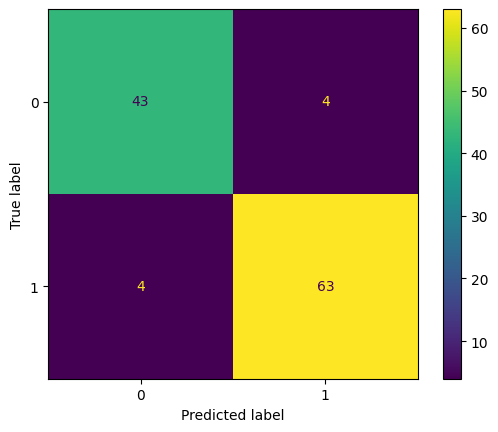

In [1]cell 1
from sklearn.datasets import load_breast_cancer from sklearn import metrics
In [2]cell 3
data = load_breast_cancer() #data.info() Can you check how can i porint the data details like columns and how many data you have
In [3]cell 4
# 1) straight from the Bunch
print("rows, columns :", data.data.shape)
print("target names :", data.target_names) # ['malignant' 'benign'] -> 0, 1
print("first 5 columns:", list(data.feature_names[:5]))
# 2) or ask sklearn for a DataFrame and use pandas as usual
df = load_breast_cancer(as_frame=True).frame
df.info()
df["target"].value_counts()Output
rows, columns : (569, 30)
target names : ['malignant' 'benign']
first 5 columns: [np.str_('mean radius'), np.str_('mean texture'), np.str_('mean perimeter'), np.str_('mean area'), np.str_('mean smoothness')]
<class 'pandas.DataFrame'>
RangeIndex: 569 entries, 0 to 568
Data columns (total 31 columns):
# Column Non-Null Count Dtype
--- ------ -------------- -----
0 mean radius 569 non-null float64
1 mean texture 569 non-null float64
2 mean perimeter 569 non-null float64
3 mean area 569 non-null float64
4 mean smoothness 569 non-null float64
5 mean compactness 569 non-null float64
6 mean concavity 569 non-null float64
7 mean concave points 569 non-null float64
8 mean symmetry 569 non-null float64
9 mean fractal dimension 569 non-null float64
10 radius error 569 non-null float64
11 texture error 569 non-null float64
12 perimeter error 569 non-null float64
13 area error 569 non-null float64
14 smoothness error 569 non-null float64
15 compactness error 569 non-null float64
16 concavity error 569 non-null float64
17 concave points error 569 non-null float64
18 symmetry eIn [4]cell 6
from sklearn.model_selection import train_test_split X_train , X_test,Y_train, Y_test = train_test_split(data.data, data.target, test_size=0.20, random_state=0)
In [5]cell 8
from sklearn.naive_bayes import GaussianNB classfier1 = GaussianNB() classfier1.fit(X_train,Y_train)
Output
GaussianNB()
In [6]cell 9
classfier1.score(X_test,Y_test)
Output
0.9298245614035088
In [7]cell 11
Y_pred =classfier1.predict(X_test) Y_pred
Output
array([0, 1, 1, 1, 1, 1, 1, 1, 1, 1, 0, 1, 1, 0, 0, 0, 1, 0, 0, 0, 0, 0,
1, 1, 0, 1, 1, 0, 1, 0, 1, 0, 1, 0, 1, 0, 1, 0, 1, 0, 1, 1, 0, 1,
0, 0, 1, 1, 1, 0, 0, 0, 0, 1, 1, 1, 1, 1, 1, 0, 0, 0, 1, 1, 0, 1,
0, 0, 0, 1, 1, 0, 1, 1, 0, 1, 1, 1, 1, 1, 0, 0, 0, 1, 0, 1, 1, 1,
0, 0, 1, 1, 1, 0, 1, 1, 0, 1, 1, 1, 1, 1, 1, 1, 0, 1, 0, 1, 1, 0,
1, 0, 0, 1])In [8]cell 12
metrics.accuracy_score(Y_pred,Y_test)
Output
0.9298245614035088
In [9]cell 14
confusion_matrix = metrics.confusion_matrix(Y_test,Y_pred) confusion_matrix
Output
array([[43, 4],
[ 4, 63]])In [10]cell 16
cm = metrics.ConfusionMatrixDisplay(confusion_matrix= confusion_matrix, display_labels=classfier1.classes_)
In [11]cell 17
import matplotlib.pyplot as plt
In [12]cell 18
cm.plot() plt.show()

In [13]cell 20
print(metrics.classification_report(Y_test, Y_pred, target_names=data.target_names, digits=3))
Output
precision recall f1-score support
malignant 0.915 0.915 0.915 47
benign 0.940 0.940 0.940 67
accuracy 0.930 114
macro avg 0.928 0.928 0.928 114
weighted avg 0.930 0.930 0.930 114